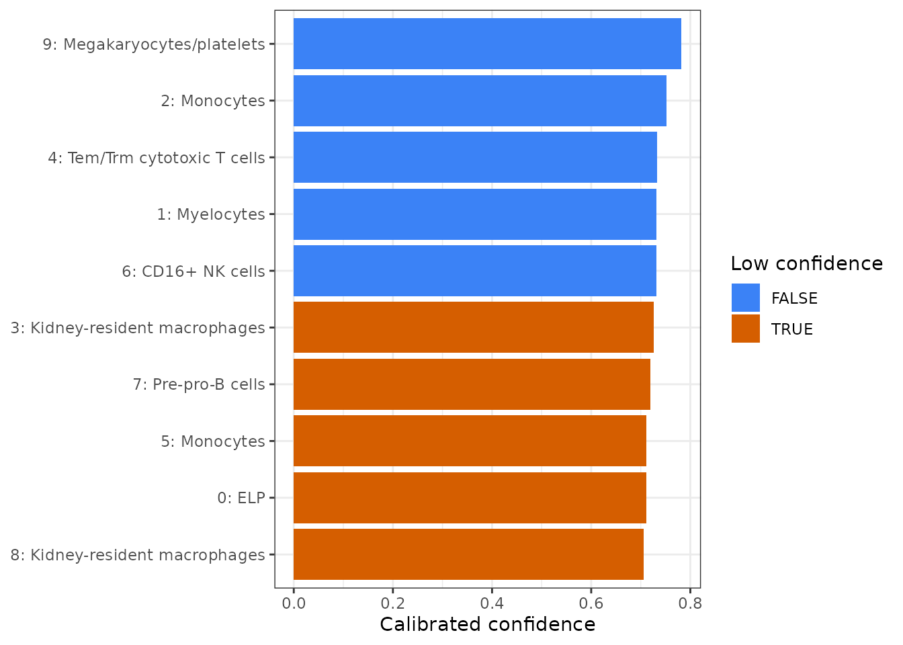
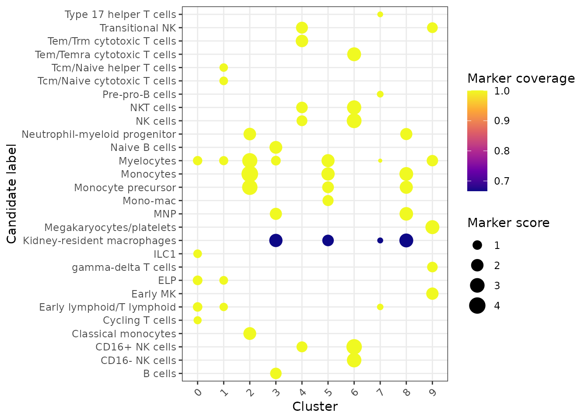
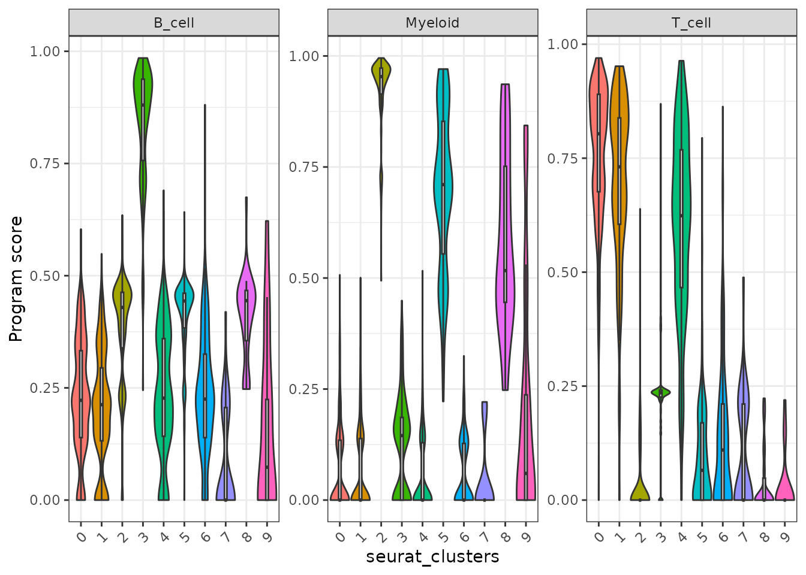
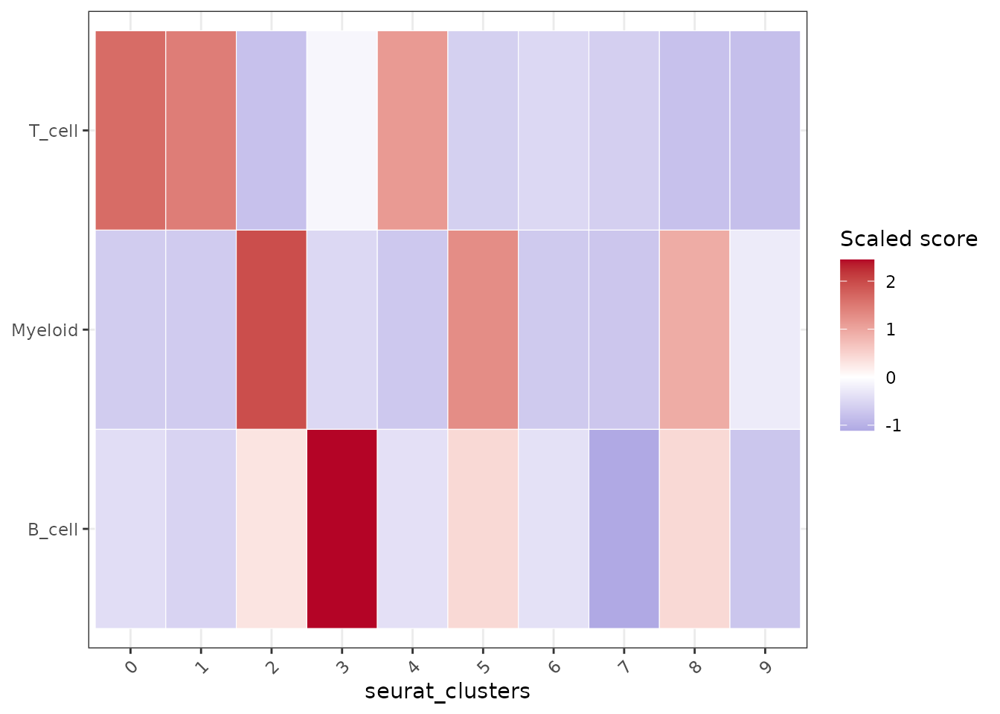

Markers, signatures, pathways, and annotation
Songqi Duan
duan@songqi.org Source:vignettes/annotation-pathways.Rmd
annotation-pathways.RmdAfter clustering, users usually ask three linked questions:
- Which genes define each cluster?
- Which known signatures or pathways explain those genes?
- How can the evidence be reused for plots and annotation?
Shennong stores DE and enrichment results on the Seurat object so the same tables can feed dot plots, interpretation prompts, and later reports.
Cluster PBMC3k and find markers
library(Shennong)
library(Seurat)
library(dplyr)
pbmc <- sn_load_data("pbmc3k")
#> INFO [2026-07-15 09:03:17] Initializing Seurat object for project: pbmc3k.
#> INFO [2026-07-15 09:03:17] Running QC metrics for human.
#> INFO [2026-07-15 09:03:18] Seurat object initialization complete.
pbmc <- sn_run_cluster(
object = pbmc,
normalization_method = "seurat",
nfeatures = 1500,
dims = 1:15,
resolution = 0.6,
species = "human",
verbose = FALSE
)
pbmc <- sn_find_de(
object = pbmc,
analysis = "markers",
group_by = "seurat_clusters",
layer = "data",
min_pct = 0.25,
logfc_threshold = 0.25,
store_name = "cluster_markers",
return_object = TRUE,
verbose = FALSE
)The result is stored under object@misc$de_results.
Retrieve it by name instead of relying on a temporary variable from an
earlier script.
marker_tbl <- sn_get_de_result(
pbmc,
de_name = "cluster_markers",
top_n = 5
)
head(marker_tbl)
#> # A tibble: 6 × 7
#> p_val avg_log2FC pct.1 pct.2 p_val_adj cluster gene
#> <dbl> <dbl> <dbl> <dbl> <dbl> <fct> <chr>
#> 1 6.44e- 89 2.52 0.42 0.083 3.54e-84 0 AQP3
#> 2 2.85e- 60 2.49 0.278 0.049 1.56e-55 0 CD40LG
#> 3 7.42e- 59 2.38 0.295 0.06 4.07e-54 0 LMNA
#> 4 1.08e- 48 1.81 0.371 0.116 5.93e-44 0 TRADD
#> 5 1.28e- 54 1.78 0.381 0.105 7.01e-50 0 TRAT1
#> 6 4.22e-102 2.49 0.512 0.118 2.31e-97 1 CCR7
names(pbmc@misc$de_results)
#> [1] "cluster_markers"Prioritize interpretable marker classes
Marker tables often contain hundreds of significant genes. Use
sn_annotate_de_features() to flag marker genes that are
especially useful for mechanistic interpretation or validation, such as
transcription factors, surface or plasma-membrane genes, cytokines, and
chemokines. When called on a Seurat object, the annotated table is
stored as another DE result, so it can be discovered and retrieved with
the same result helpers.
pbmc <- sn_annotate_de_features(
pbmc,
de_name = "cluster_markers",
species = "human"
)
sn_list_results(pbmc)
#> # A tibble: 2 × 8
#> collection type name analysis method created_at n_rows source
#> <chr> <chr> <chr> <chr> <chr> <chr> <int> <chr>
#> 1 de_results de cluster_ma… markers wilcox 2026-07-1… 4670 NA
#> 2 de_results de cluster_ma… markers wilcox 2026-07-1… 4670 NA
sn_get_de_result(
pbmc,
de_name = "cluster_markers_feature_classes",
top_n = 5
) |>
dplyr::select(
cluster,
gene,
avg_log2FC,
feature_classes,
starts_with("is_")
) |>
head()
#> # A tibble: 6 × 8
#> cluster gene avg_log2FC feature_classes is_transcription_fac…¹
#> <fct> <chr> <dbl> <chr> <lgl>
#> 1 0 AQP3 2.52 surface_membrane FALSE
#> 2 0 CD40LG 2.49 surface_membrane;cy… FALSE
#> 3 0 LMNA 2.38 NA FALSE
#> 4 0 TRADD 1.81 NA FALSE
#> 5 0 TRAT1 1.78 NA FALSE
#> 6 1 CCR7 2.49 surface_membrane FALSE
#> # ℹ abbreviated name: ¹is_transcription_factor
#> # ℹ 3 more variables: is_surface_membrane <lgl>, is_cytokine <lgl>,
#> # is_chemokine <lgl>Plot stored markers without hand-copying gene lists
Because the DE result is stored, sn_plot_dot() can
select top markers per cluster directly.
sn_plot_dot(
x = pbmc,
features = "top_markers",
de_name = "cluster_markers",
n = 4,
group_by = "seurat_clusters",
palette = "RdBu",
title = "Top PBMC3k markers"
)
For canonical checks, pass marker genes explicitly.
sn_plot_dot(
x = pbmc,
features = c("IL7R", "CCR7", "MS4A1", "CD79A", "LYZ", "S100A8", "NKG7"),
group_by = "seurat_clusters",
palette = "Purples",
direction = 1,
title = "Canonical PBMC markers"
)
Run traceable consensus annotation
sn_run_annotation() is the stable annotation entry
point. Its default method = "consensus" scores the bundled
canonical marker database, retains the best and second-best candidate,
calibrates a confidence margin, assigns hierarchical labels, and maps
known labels to a versioned Cell Ontology snapshot. It supports both
cluster- and cell-level output; without a reference, each cell inherits
the traceable consensus of its cluster.
pbmc <- sn_run_annotation(
pbmc,
group_by = "seurat_clusters",
method = "consensus",
species = "human",
tissue = "peripheral blood",
ontology = TRUE,
store_name = "pbmc_consensus"
)
annotation_index <- sn_list_results(pbmc, type = "annotation")
annotation_index
#> # A tibble: 1 × 8
#> collection type name analysis method created_at n_rows source
#> <chr> <chr> <chr> <chr> <chr> <chr> <int> <chr>
#> 1 analysis_results anno… pbmc… annotat… conse… 2026-07-1… 4037 NA
annotation <- sn_get_result(
pbmc,
type = "annotation",
name = "pbmc_consensus"
)
head(annotation$tables$clusters)
#> # A tibble: 6 × 16
#> cluster prediction second_best_label prediction_score margin
#> <chr> <chr> <chr> <dbl> <dbl>
#> 1 0 ELP Early lymphoid/T… 0.711 0.0364
#> 2 1 Myelocytes ELP 0.732 0.106
#> 3 2 Monocytes Monocyte precurs… 0.752 0.172
#> 4 3 Kidney-resident ma… Naive B cells 0.726 0.0860
#> 5 4 Tem/Trm cytotoxic … Transitional NK 0.732 0.108
#> 6 5 Monocytes Myelocytes 0.712 0.0385
#> # ℹ 11 more variables: method_count <int>, methods <chr>,
#> # low_confidence <lgl>, level_1 <chr>, level_2 <chr>, level_3 <chr>,
#> # supporting_markers <chr>, conflicting_markers <chr>,
#> # reference_coverage <dbl>, ontology_id <chr>, ontology_label <chr>
head(annotation$tables$cells)
#> # A tibble: 6 × 17
#> cell cluster prediction second_best_label prediction_score margin
#> <chr> <chr> <chr> <chr> <dbl> <dbl>
#> 1 AAACATA… 0 ELP Early lymphoid/T… 0.711 0.0364
#> 2 AAACATT… 3 Kidney-re… Naive B cells 0.726 0.0860
#> 3 AAACATT… 0 ELP Early lymphoid/T… 0.711 0.0364
#> 4 AAACCGT… 2 Monocytes Monocyte precurs… 0.752 0.172
#> 5 AAACCGT… 6 CD16+ NK … NK cells 0.731 0.104
#> 6 AAACGCA… 0 ELP Early lymphoid/T… 0.711 0.0364
#> # ℹ 11 more variables: method_count <int>, methods <chr>,
#> # low_confidence <lgl>, level_1 <chr>, level_2 <chr>, level_3 <chr>,
#> # supporting_markers <chr>, conflicting_markers <chr>,
#> # reference_coverage <dbl>, ontology_id <chr>, ontology_label <chr>
annotation$diagnostics
#> $low_confidence_cells
#> [1] 1193
#>
#> $low_confidence_clusters
#> [1] 5
#>
#> $unmapped_ontology_labels
#> [1] "ELP" "Myelocytes"
#> [3] "Kidney-resident macrophages" "Tem/Trm cytotoxic T cells"
#> [5] "Pre-pro-B cells"Every final label remains linked to marker support, conflicts, reference coverage, confidence, and provenance. LLM helpers can explain this evidence but cannot replace the stored computational label. Review uncertain assignments before using them as biological truth.
sn_review_annotation(pbmc, "pbmc_consensus")
#> $cells
#> # A tibble: 1,193 × 17
#> cell cluster prediction second_best_label prediction_score margin
#> <chr> <chr> <chr> <chr> <dbl> <dbl>
#> 1 AAACAT… 0 ELP Early lymphoid/T… 0.711 0.0364
#> 2 AAACAT… 3 Kidney-re… Naive B cells 0.726 0.0860
#> 3 AAACAT… 0 ELP Early lymphoid/T… 0.711 0.0364
#> 4 AAACGC… 0 ELP Early lymphoid/T… 0.711 0.0364
#> 5 AAACGC… 5 Monocytes Myelocytes 0.712 0.0385
#> 6 AAACTT… 3 Kidney-re… Naive B cells 0.726 0.0860
#> 7 AAAGAG… 0 ELP Early lymphoid/T… 0.711 0.0364
#> 8 AAAGCC… 0 ELP Early lymphoid/T… 0.711 0.0364
#> 9 AAAGGC… 3 Kidney-re… Naive B cells 0.726 0.0860
#> 10 AAAGTT… 3 Kidney-re… Naive B cells 0.726 0.0860
#> # ℹ 1,183 more rows
#> # ℹ 11 more variables: method_count <int>, methods <chr>,
#> # low_confidence <lgl>, level_1 <chr>, level_2 <chr>, level_3 <chr>,
#> # supporting_markers <chr>, conflicting_markers <chr>,
#> # reference_coverage <dbl>, ontology_id <chr>, ontology_label <chr>
#>
#> $clusters
#> # A tibble: 5 × 16
#> cluster prediction second_best_label prediction_score margin
#> <chr> <chr> <chr> <dbl> <dbl>
#> 1 0 ELP Early lymphoid/T… 0.711 0.0364
#> 2 3 Kidney-resident ma… Naive B cells 0.726 0.0860
#> 3 5 Monocytes Myelocytes 0.712 0.0385
#> 4 7 Pre-pro-B cells Early lymphoid/T… 0.719 0.0644
#> 5 8 Kidney-resident ma… Monocytes 0.706 0.0200
#> # ℹ 11 more variables: method_count <int>, methods <chr>,
#> # low_confidence <lgl>, level_1 <chr>, level_2 <chr>, level_3 <chr>,
#> # supporting_markers <chr>, conflicting_markers <chr>,
#> # reference_coverage <dbl>, ontology_id <chr>, ontology_label <chr>
#>
#> $evidence
#> # A tibble: 980 × 8
#> entity label parent_label score method supporting_markers
#> <chr> <chr> <chr> <dbl> <chr> <chr>
#> 1 0 Age-associate… B cells 0.00528 marke… TBX21;FCRL2;ITGAX
#> 2 0 Alveolar macr… Macrophages 0 marke… GPNMB;TREM2;BHLHE…
#> 3 0 B cells B cells 0.0190 marke… CD79A;MS4A1;CD19
#> 4 0 CD16- NK cells ILC 0.0662 marke… NKG7;GNLY;CD160
#> 5 0 CD16+ NK cells ILC 0.0731 marke… NKG7;GNLY;FCGR3A
#> 6 0 CD8a/a T cells 0.0162 marke… PDCD1;ZNF683;GNG4
#> 7 0 CD8a/b(entry) T cells 0.0607 marke… SATB1;TOX2;CCR9
#> 8 0 Classical mon… Monocytes 0.0455 marke… S100A9;CD14;S100A…
#> 9 0 CMP HSC/MPP 0 marke… MPO;CTSG;FLT3
#> 10 0 CRTAM+ gamma-… T cells 0.0216 marke… IKZF2;TRDC;ITGAD
#> # ℹ 970 more rows
#> # ℹ 2 more variables: conflicting_markers <chr>,
#> # reference_coverage <dbl>
#>
#> $diagnostics
#> $diagnostics$low_confidence_cells
#> [1] 1193
#>
#> $diagnostics$low_confidence_clusters
#> [1] 5
#>
#> $diagnostics$unmapped_ontology_labels
#> [1] "ELP" "Myelocytes"
#> [3] "Kidney-resident macrophages" "Tem/Trm cytotoxic T cells"
#> [5] "Pre-pro-B cells"
#>
#>
#> $provenance
#> $provenance$package_versions
#> $provenance$package_versions$Shennong
#> [1] "0.2.0"
#>
#> $provenance$package_versions$R
#> [1] "4.6.1"
#>
#>
#> $provenance$random_seed
#> [1] NA
#>
#> $provenance$timestamp
#> [1] "2026-07-15 09:04:50 UTC"
sn_plot_annotation_confidence(
pbmc,
store_name = "pbmc_consensus",
level = "cluster"
)
sn_plot_annotation_markers(
pbmc,
store_name = "pbmc_consensus",
top_n = 5
)
If trusted labels are present, a confusion heatmap makes disagreements visible.
sn_plot_annotation_confusion(
pbmc,
truth = "curated_cell_type",
store_name = "pbmc_consensus"
)Choose a reference backend deliberately
Use sn_list_methods("annotation") and
sn_method_status() to inspect current availability.
Reference methods should not be used when tissue, disease, species,
assay chemistry, or cell-state coverage is badly mismatched; a high
similarity to an incomplete reference is not evidence that the missing
cell type is absent.
| Backend | Best use | Input and runtime | Stored output |
|---|---|---|---|
| SingleR | Default reference prediction with per-label scores | Query and annotated Seurat/SummarizedExperiment reference; CPU;
optional SingleR
|
Full score evidence, pruned label, delta, coverage |
| CellTypist | External pretrained immune atlases | Counts plus model; CPU CLI on PATH
|
Original label columns and consensus evidence |
| Seurat | Anchor transfer from a compatible Seurat reference | Query/reference assays and labels; CPU; optional
Seurat
|
Transferred labels and all returned score columns |
| Symphony | Repeated mapping to a compressed atlas | Built reference or Seurat reference; CPU; optional
symphony
|
kNN confidence and mapped embedding |
| scmap | Conservative projection to indexed expression centroids | Shared features and annotated reference; CPU; optional
scmap
|
Label, similarity, and unassigned status |
| scANVI | Semi-supervised mapping with batch structure | Raw counts, labels, batch metadata; CPU or CUDA through pixi | Labels and managed backend artifacts |
Backend-specific functions stay internal rather than creating
parallel result types. Select the backend with
sn_run_annotation(method = ...) and retrieve every result
with the same sn_get_result(object, "annotation", name)
contract.
The underlying methods should be cited in publications: SingleR (Aran et al., 2019), CellTypist (Dominguez Conde et al., 2022), Seurat mapping (Hao et al., 2021), Symphony (Kang et al., 2021), scmap (Kiselev et al., 2018), and scANVI (Xu et al., 2021). Cell Ontology identifiers come from the bundled 2026-06-08 CL snapshot; verify current author and ontology guidelines when preparing a submission.
pbmc <- sn_run_annotation(
pbmc,
group_by = "seurat_clusters",
method = "consensus",
reference = reference,
reference_label_by = "cell_type",
consensus_reference_method = "singleR",
species = "human",
store_name = "pbmc_reference_consensus"
)
reference_result <- sn_get_result(
pbmc,
type = "annotation",
name = "pbmc_reference_consensus"
)
head(reference_result$tables$backend_predictions)
head(reference_result$tables$backend_evidence)Transfer labels from a reference
Marker tables are useful when you want to name clusters manually.
When a trusted reference already exists,
sn_transfer_labels() follows Seurat’s anchor workflow and
writes the projected label plus a confidence score back to the query
metadata. The wrapper keeps the source label and transfer settings in
query@misc$label_transfer, so the annotation is not just a
loose metadata column.
reference <- pbmc
query <- pbmc
reference$cell_type <- reference$seurat_clusters
query <- sn_transfer_labels(
object = query,
reference = reference,
label_by = "cell_type",
prediction_prefix = "pbmc_reference",
dims = 1:15,
verbose = FALSE
)
table(query$pbmc_reference_label)
head(query[[]][, c("pbmc_reference_label", "pbmc_reference_score")])The same query-first interface can use Coralysis reference mapping
when the reference was trained with
sn_run_cluster(integration_method = "coralysis"). By
default, Shennong keeps the native Coralysis-trained
SingleCellExperiment and PCA model under
reference@misc$coralysis, so the returned object can be
used directly as a label-transfer reference.
reference <- sn_run_cluster(
reference,
batch = "sample_id",
integration_method = "coralysis",
normalization_method = "seurat",
verbose = FALSE
)
query <- sn_transfer_labels(
object = query,
reference = reference,
label_by = "cell_type",
method = "coralysis",
prediction_prefix = "coral_reference",
transfer_control = list(k.nn = 10),
verbose = FALSE
)For durable handoffs, prepare a compact transfer-ready reference instead of saving the full analysis object. Coralysis references keep the trained models, PCA model, feature names, and selected labels while dropping the large reference assay matrices and joint-probability tables.
coral_reference <- sn_prepare_label_transfer_reference(
reference,
label_by = "cell_type",
method = "coralysis",
path = "data/processed/pbmc_coralysis_reference.qs2",
overwrite = TRUE
)
query <- sn_transfer_labels(
object = query,
reference = coral_reference,
label_by = "cell_type",
method = "coralysis",
prediction_prefix = "coral_reference",
verbose = FALSE
)Discover and manage bundled signatures
Shennong ships a signature catalog so blocking genes, marker sets, and report features do not need to be redefined in every analysis.
signature_index <- sn_list_signatures(species = "human")
head(signature_index)
#> # A tibble: 6 × 5
#> species path name kind n_genes
#> <chr> <chr> <chr> <chr> <int>
#> 1 human Blocklists/Pseudogenes Pseudogenes signature 12600
#> 2 human Blocklists/Non-coding Non-coding signature 7783
#> 3 human Programs/HeatShock HeatShock signature 97
#> 4 human Programs/cellCycle.G1S cellCycle.G1S signature 42
#> 5 human Programs/cellCycle.G2M cellCycle.G2M signature 52
#> 6 human Programs/IFN IFN signature 107
immune_signatures <- sn_get_signatures(
species = "human",
category = c("mito", "ribo")
)
head(immune_signatures)
#> [1] "MT-ATP6" "MT-ATP8" "MT-CO1" "MT-CO2" "MT-CO3" "MT-CYB"Custom signatures can be added, renamed, and deleted through the same API. Use a project-specific catalog path when you do not want to modify the package-level catalog.
catalog_path <- "config/signatures/pbmc_signatures.csv"
sn_add_signature(
species = "human",
path = "custom/t_cell_activation",
genes = c("IL7R", "CCR7", "LTB"),
catalog_path = catalog_path,
source = "project"
)
sn_update_signature(
species = "human",
path = "custom/t_cell_activation",
rename_to = "custom/naive_t_cell",
catalog_path = catalog_path
)
sn_delete_signature(
species = "human",
path = "custom/naive_t_cell",
catalog_path = catalog_path
)Score programs in cells and samples
sn_score_programs() accepts named gene-set lists,
program/gene tables, named gene vectors, or bundled signature queries.
UCell is the default for per-cell work because its rank-based score
works directly with sparse expression and is less sensitive to dataset
composition than a raw mean. AUCell is useful when
area-under-recovery-curve activity is the intended statistic, but its
ranking step is more expensive. GSVA and ssGSEA are intended primarily
for samples or aggregated groups; supply group_by for large
single-cell objects. The mean backend is dependency-free
and transparent, but it is more sensitive to assay scale and signature
size.
immune_programs <- list(
B_cell = c("MS4A1", "CD79A", "CD37", "CD74"),
T_cell = c("CD3D", "CD3E", "TRAC", "LTB"),
Myeloid = c("LYZ", "FCN1", "S100A8", "CTSS")
)
pbmc <- sn_score_programs(
pbmc,
signatures = immune_programs,
method = "ucell",
assay = "RNA",
layer = "data",
name = "immune_programs",
min_genes = 2
)
program_result <- sn_get_result(
pbmc,
type = "program_scoring",
name = "immune_programs"
)
program_result$tables$coverage
#> # A tibble: 3 × 6
#> program n_genes n_matched coverage matched_genes missing_genes
#> <chr> <int> <int> <dbl> <chr> <chr>
#> 1 B_cell 4 4 1 MS4A1;CD79A;CD37;CD… ""
#> 2 T_cell 4 4 1 CD3D;CD3E;TRAC;LTB ""
#> 3 Myeloid 4 4 1 LYZ;FCN1;S100A8;CTSS ""
head(program_result$tables$scores)
#> # A tibble: 6 × 5
#> entity program score level group_by
#> <chr> <chr> <dbl> <chr> <chr>
#> 1 AAACATACAACCAC-1 B_cell 0.352 cell NA
#> 2 AAACATTGAGCTAC-1 B_cell 0.913 cell NA
#> 3 AAACATTGATCAGC-1 B_cell 0.177 cell NA
#> 4 AAACCGTGCTTCCG-1 B_cell 0.464 cell NA
#> 5 AAACCGTGTATGCG-1 B_cell 0.181 cell NA
#> 6 AAACGCACTGGTAC-1 B_cell 0 cell NAUCell and AUCell require their optional Bioconductor packages and run
on CPU. GSVA/ssGSEA require GSVA and run on CPU; Shennong
blocks per-cell GSVA on more than 5,000 sparse columns unless users
aggregate explicitly. Cite UCell (Andreatta and Carmona, 2021), AUCell
(Aibar et al., 2017), GSVA (Hänzelmann et al., 2013), or ssGSEA (Barbie
et al., 2009) according to the selected backend.
sn_plot_program_activity(
pbmc,
name = "immune_programs",
group_by = "seurat_clusters"
)
sn_plot_program_heatmap(
pbmc,
name = "immune_programs",
group_by = "seurat_clusters"
)
For comparative studies, preserve the sample or patient as the
inferential unit. sn_test_programs() first averages cell
scores within each sample/condition/stratum, then runs the selected
test; omitting sample_by is explicitly marked as
exploratory cell-level inference.
pbmc <- sn_test_programs(
pbmc,
score_name = "immune_programs",
condition_by = "condition",
sample_by = "patient",
group_by = "cell_type",
contrast = c("treated", "control"),
method = "limma",
store_name = "immune_program_condition"
)
sn_get_result(
pbmc,
type = "program_comparison",
name = "immune_program_condition"
)$tables$primaryRun enrichment from stored marker results
sn_enrich() can accept a gene vector, a ranked vector, a
data frame, or a Seurat object with stored DE results. For cluster
markers, the Seurat-object path is the most reproducible because the
enrichment knows which DE result it came from.
pbmc <- sn_enrich(
x = pbmc,
source_de_name = "cluster_markers",
species = "human",
database = "GOBP",
store_name = "cluster_gobp",
return_object = TRUE
)
#> INFO [2026-07-15 09:05:18] Running ORA analysis for the GOBP database.
pathways <- sn_get_enrichment_result(
pbmc,
enrichment_name = "cluster_gobp",
top_n = 5
)
head(pathways)
#> # A tibble: 5 × 12
#> ID Description GeneRatio BgRatio RichFactor FoldEnrichment zScore
#> <chr> <chr> <chr> <chr> <dbl> <dbl> <dbl>
#> 1 GO:00… regulation… 159/2481 453/18… 0.351 2.67 14.0
#> 2 GO:19… mononuclea… 152/2481 439/18… 0.346 2.63 13.5
#> 3 GO:00… generation… 147/2481 438/18… 0.336 2.55 12.8
#> 4 GO:00… regulation… 146/2481 472/18… 0.309 2.35 11.6
#> 5 GO:00… nucleotide… 146/2481 478/18… 0.305 2.32 11.4
#> # ℹ 5 more variables: pvalue <dbl>, p.adjust <dbl>, qvalue <dbl>,
#> # geneID <chr>, Count <int>If you already have an enrichment table from another tool, store it
with sn_store_enrichment() so the interpretation layer can
find it.
external_terms <- data.frame(
cluster = "0",
ID = "GO:0006955",
Description = "immune response",
p.adjust = 0.001,
geneID = "IL7R/CCR7/LTB"
)
pbmc <- sn_store_enrichment(
object = pbmc,
result = external_terms,
store_name = "external_gobp",
analysis = "ora",
database = "GOBP",
species = "human",
source_de_name = "cluster_markers",
return_object = TRUE
)Cell communication and regulatory activity
Cell communication should be run through a real backend rather than
an ad hoc ligand-receptor table.
sn_run_cell_communication() keeps the same stored-result
pattern used by DE and enrichment. Use CellChat for a global interaction
network, NicheNet when the question is sender-to-receiver ligand
activity, or LIANA when the optional LIANA package is available and
consensus scoring is preferred.
pbmc <- sn_run_cell_communication(
object = pbmc,
method = "cellchat",
group_by = "seurat_clusters",
species = "human",
store_name = "cluster_cellchat"
)
cellchat_tbl <- sn_get_cell_communication_result(
pbmc,
communication_name = "cluster_cellchat"
)
head(cellchat_tbl)NicheNet needs its ligand-target matrix and ligand-receptor network. Shennong requires those priors explicitly so the output remains traceable to the real NicheNet model rather than an inferred placeholder network.
pbmc <- sn_run_cell_communication(
object = pbmc,
method = "nichenetr",
group_by = "seurat_clusters",
sender = c("0", "1"),
receiver = "2",
geneset = c("IL7R", "CCR7", "LTB"),
ligand_target_matrix = ligand_target_matrix,
lr_network = lr_network,
store_name = "sender_receiver_nichenet"
)For transcription-factor and pathway activity,
sn_run_regulatory_activity() uses fast footprint methods
through decoupleR. DoRothEA reports TF activity; PROGENy
reports pathway activity.
pbmc <- sn_run_regulatory_activity(
object = pbmc,
method = "dorothea",
group_by = "seurat_clusters",
species = "human",
store_name = "cluster_dorothea"
)
tf_activity <- sn_get_regulatory_activity_result(
pbmc,
activity_name = "cluster_dorothea",
sources = c("NFKB1", "STAT1")
)
head(tf_activity)Optional reference annotation with CellTypist
CellTypist is a Python command-line tool, so Shennong keeps it explicit. When the input is a Seurat object, predictions are written back to metadata. When the input is a file path, Shennong returns the prediction table because there is no object to update.
pbmc <- sn_run_celltypist(
x = pbmc,
model = "Immune_All_Low.pkl",
over_clustering = "seurat_clusters",
majority_voting = TRUE,
quiet = TRUE
)
grep("Immune_All_Low", colnames(pbmc[[]]), value = TRUE)
prediction_tbl <- sn_run_celltypist(
x = "pbmc3k_counts.csv",
model = "Immune_All_Low.pkl",
over_clustering = "obs_cluster",
quiet = TRUE
)
head(prediction_tbl)The intended pattern is evidence first, label second: markers and pathways are computed and stored before automated or LLM-assisted annotation consumes them.